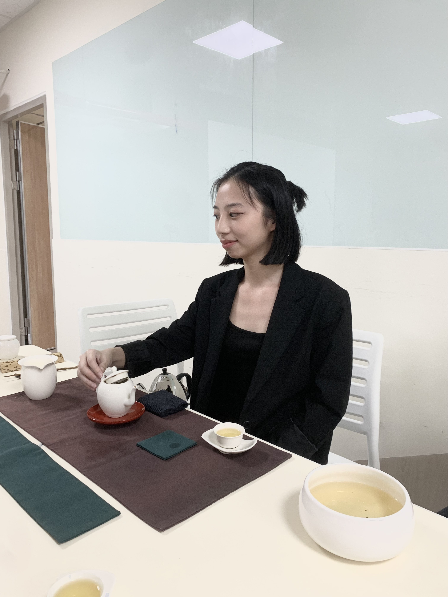

陳旻薇 | Shanna
靜宜大學觀光事業學系畢業，具備跨領域實作與團隊協作能力。
團隊合作與企劃製作：
參與敘事力學生團隊，負責 Podcast 製作、展覽策劃、主持與腳本撰寫，擅長傾聽與溝通，能準確提出問題與建議，具備強大抗壓性。
實務經驗：
策劃「響應海洋污染」主題展覽，負責展品製作、展場規劃、線上抽獎活動與開幕式新聞稿撰寫，展現企劃與執行力。
多元職能與社群營運：
曾任「淺山精靈」社群小編、課程助教，熟悉文案撰寫、側記、課程紀錄整理與活動素材準備，能靈活應對各式專案。